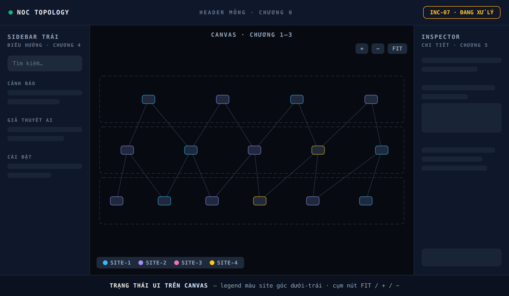
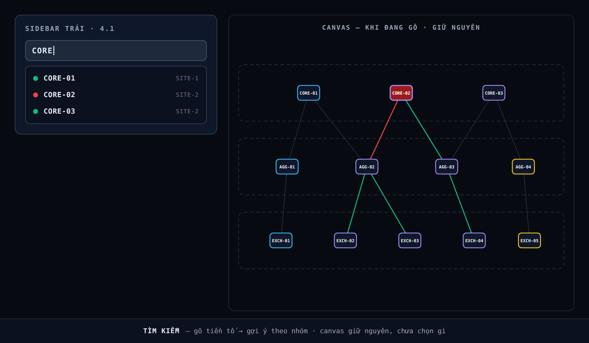
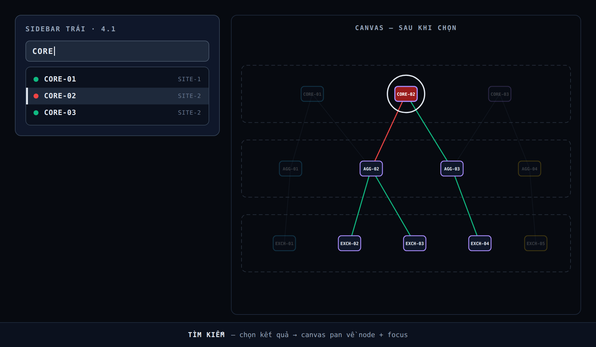
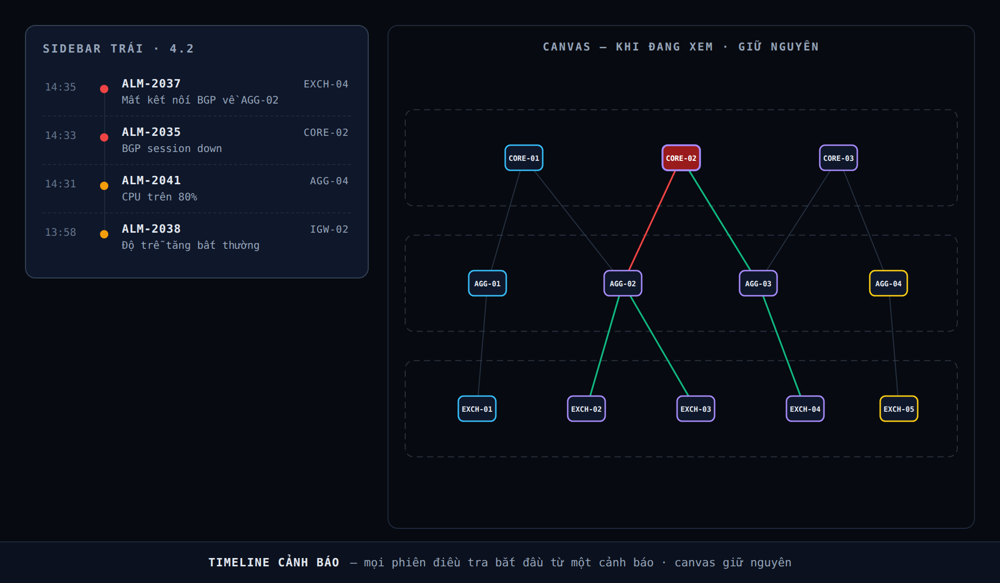
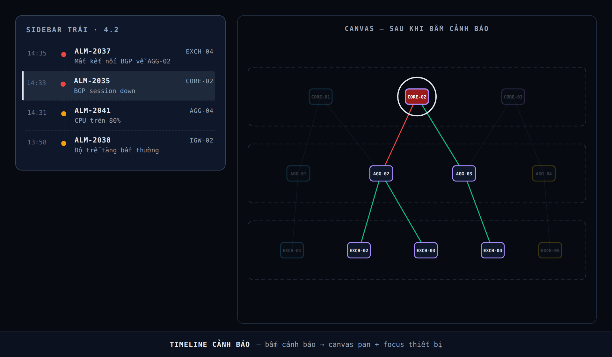
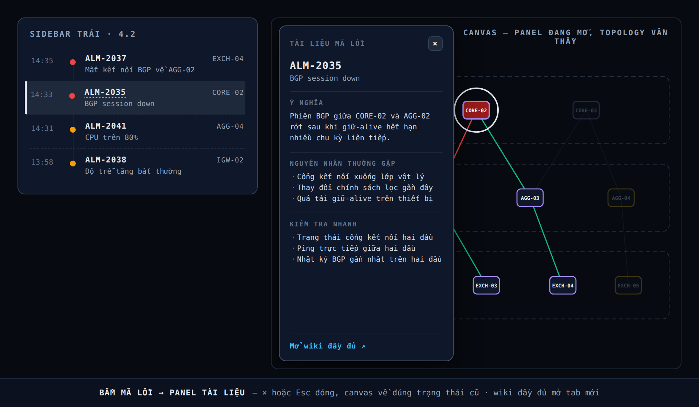
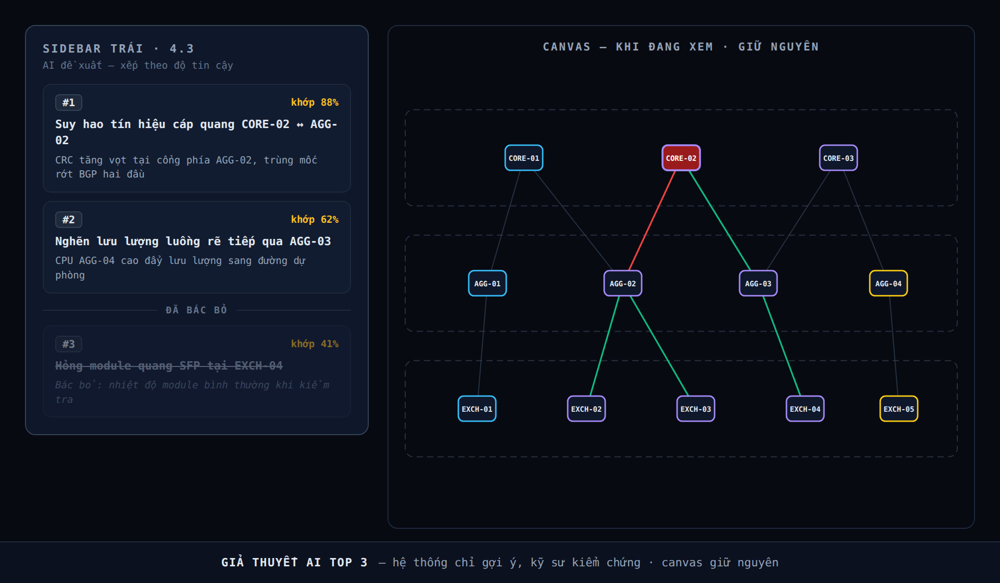
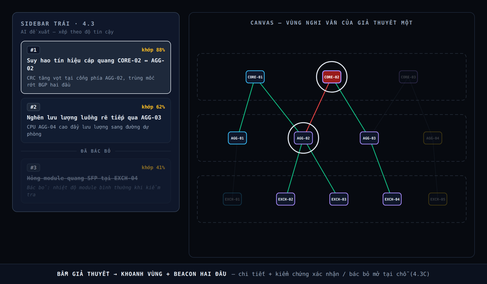
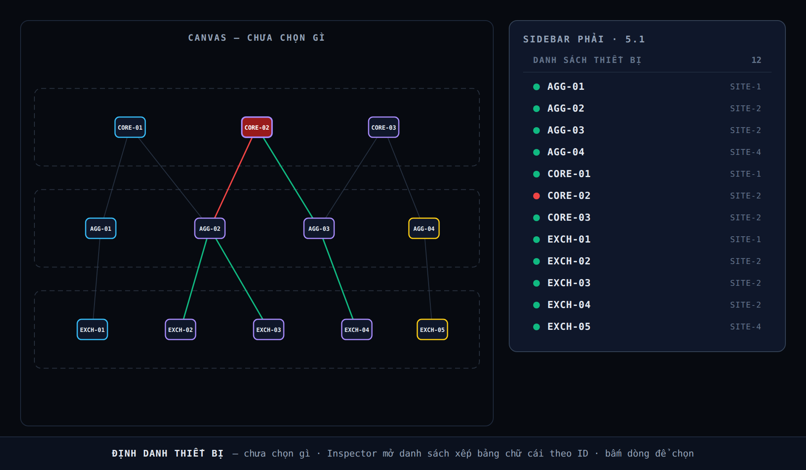
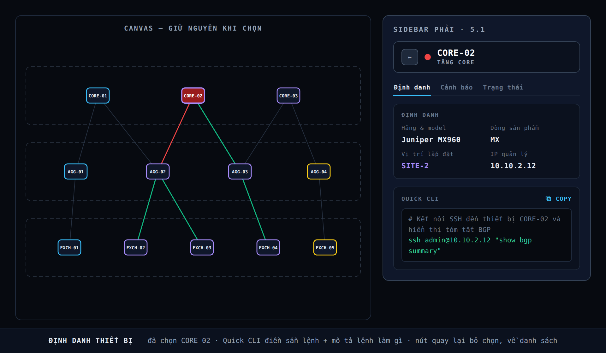

Dashboard gồm bốn vùng. Trong đó thì canvas hiển thị topology chiếm chủ đạo diện tích hiển thị:
Mỗi vùng kèm ghi chú "thuộc chương nào" — bản mục lục không gian của tài liệu.
Còn sống trên canvas: legend màu site góc dưới-trái — một hàng bốn swatch SITE-1…SITE-4, không có tier (tier đọc qua nhãn dải nền) — và cụm nút Fit / + / − nổi. Legend cũng là chỗ gắn chip quick-focus site (mục 4.4). Breadcrumb đã bỏ: canvas không có drill-down, beacon đã giữ vết các node đã tới, Inspector đã mô tả node đang chọn.

Một node gồm bốn bộ phận:
Viền node là kênh mã hoá site, gồm các ràng buộc:
#38bdf8 (sky) · SITE-2 #a78bfa (violet) · SITE-3 #f472b6 (pink) · SITE-4 #facc15 (yellow)Nền node là kênh mã hoá sức khoẻ, gồm ba mức:
#0f172a — đây là trạng thái mặc định của node, hoà vào canvas.#78350f — node vẫn hoạt động nhưng gặp vấn đề cần giải quyết.#991b1b — node không hoạt động.Layer là tầng của node trong cấu trúc mạng — và được thể hiện bằng vị trí của nó:
PEERING & TRANSIT, CORE BACKBONE…). Dải nền mờ viền nét đứt sau tầng cũng để nhóm các node thành layer.CORE-02, EXCH-07) — do đó layer vẫn có thể đọc được nếu người dùng di chuyển các node.Node mang hai trường chữ gồm:
▼ +N / ▲ −N, dưới thân node, chỉ trên node exchange. N là số access switch của trạm — ví dụ EXCH-07 có N = 14: đang gập hiện ▼ +N, bấm để bung ra N lá Access (mục 1.4); đang bung hiện ▲ −N, bấm để gập lại.Một edge nối đúng hai node, qua đúng hai cổng vật lý:
CORE-01:0/0/0 → AGG-01:0/0/0: node nguồn, cổng nguồn → node đích, cổng đích.Màu edge là kênh mã hoá trạng thái sức khỏe của liên kết — độc lập với trạng thái hai đầu node, gồm hai mức:
#10b981 — cùng xanh emerald với lá Access (mục 1.5).#ef4444 — khác nền đỏ đậm của node vì nét mảnh cần nổi rõ trên canvas tối.Độ dày edge là kênh mã hoá băng thông lắp đặt, gồm ba bậc cố định:
Nét edge là kênh mã hoá hiệu suất sử dụng băng thông:
Kéo ở nền canvas để dịch góc nhìn.
Canvas có hai mức chi tiết (LOD): mức gần — mặc định — và mức xa khi zoom-out qua ngưỡng:
Kéo một node để đổi vị trí của nó:
Hover là kênh thông tin thể hiện đầy đủ các thông tin của một node hoặc edge:
Focus là thuộc tính tạm thời của phiên làm việc, không phải thuộc tính của thiết bị:
Tab Tìm kiếm giúp kỹ sư xác định node trên topology dựa trên từ khóa:
CORE là gợi ý mọi node core, gõ tên site là gợi ý toàn bộ node có tên site khớp với từ khóa.

Tab Timeline cảnh báo thể hiện các cảnh báo theo dòng thời gian:



Tab Giả thuyết AI thể hiện các giả thuyết được ai đưa ra:


Tab Cài đặt hiển thị thể hiện những tùy chỉnh của kỹ sư tác động trực tiếp lên canvas:
Bấm chọn một node trên canvas để đưa Inspector về ngữ cảnh thiết bị đó:

